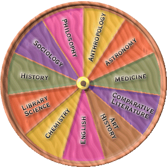

 |
What are the top 10 developments of the 1900's? This was the question the World Book editors asked of a distinguished panel of advisors and contributors. Their choices make up this feature. We chose experts representing a broad range of disciplines. Some panelists adopted a general historical approach regardless of his or her field. Others viewed the most significant events of the century in terms of their own disciplines. Still others developed a combined general/topical approach. The wheel on this site shows all the disciplines represented by our panelists. Click on each discipline and the wheel becomes your gateway to the Top l0 list of that scholar. Not surprisingly, a number of our experts chose the same events. Still, they offer different and fresh views on these developments. See how our experts differ. Find out both the positive and negative effects of many of the most important events. Discover which people our panelists included among the century's most influential shapers. And to find even more information on a particular topic, use the treasure house of links to additional resources. |